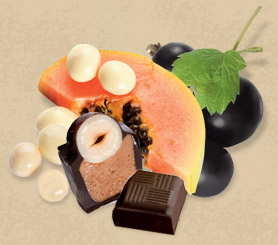
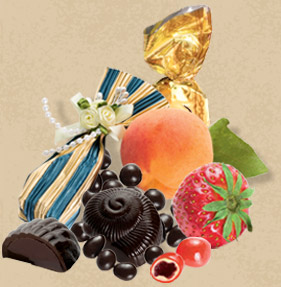
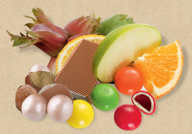
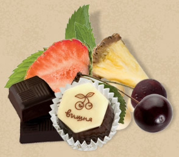

Шоколадомания

| Анна Австрийская спасалась шоколадом от тоски В 1615 году дочь испанского короля Анна Австрийская была выдана замуж за Людовика XIII. От одиночества в чужой стране она спасалась шоколадом, который привезла с собой в Париж. Благодаря юной принцессе шоколад стал одним из самых популярных лакомств французской знати. Джованни Казанова считал, что шоколад незаменим в любовных похождениях Итальянец Джованни Казанова, известный своими многочисленными любовными и авантюрными приключениями, считал, что секрет его потенции —- в утренней чашечке шоколада. Всегда и всюду он носил при себе серебряный «шоколадник», что документально зафиксировано в дневниках соблазнителя. |
 |
Иоганн Вольфганг Гете не отправлялся в путешествие без шоколада |
В течение долгого времени католики вели дискуссию о том, можно ли пить шоколад во время поста. |
| Дома из шоколада можно увидеть в Барселоне В октябре 2000 года в Барселоне открылся музей шоколада. В коллекции музея —- уменьшенные варианты архитектурных шедевров Барселоны, выполненные из шоколада. В целом же экспозиция рассказывает об извилистом пути изысканного лакомства в Европу. На карте мира появилась Шоколандия В немецком Европа-парке, что в 45 км от Баден-Бадена, представлены все страны мира, в числе которых сказочная Шоколандия. Каждый день здесь устраивается настоящее шоколадное шоу, которое зрители смотрят, сидя на вращающейся вокруг сцены трибуне. Парк очень популярен: ежегодно его посещают 3 млн человек. |
 |
| Автомобиль из шоколада На одном из «Шоколадных салонов», которые каждый год проводятся в Париже, вниманию зрителей была представлена точная копия болида французской команды «Формула-1» Prost AP 01. На изготовление этого шедевра ушло 580 кг шоколада. Парижская коллекция «кутюр" из шоколада Главным событием одного из «Шоколадных салонов», ежегодно проходящих в Париже, стал уникальный показ моды. В одежде, созданной ведущими французскими модельерами, преобладали шоколадные детали. А при выборе аксессуаров дизайнеры использовали все, что имело хоть какое-то отношение к шоколаду. Правда, попробовать эти произведения искусства ценителям не удалось, поскольку их показывали настоящие модели. Нью-Йорк продемонстрировал возможности американских шоколадных модельеров Представьте себе великолепный корсет, тающий во рту, или чудесные жемчужины, которые можно съесть одну за другой. Так выглядел забавный показ мод, который в декабре 1998 года прошел в Нью-Йорке. На суд зрителей было представлено 12 платьев знаменитых дизайнеров из шоколада. Темный, светлый и белый шоколад был использован для изготовления вечерних нарядов и украшений, причем из сладкого материала было сделано даже подвенечное платье. |
 |
Самое большое шоколадное печенье изготовили в Новой Зеландии |
| Шоколадный отпечаток руки велогонщика продан за баснословную сумму На шоколадной выставке в Брюсселе прошел аукцион
оригинальных «картин» из шоколада. Каждая из них, весом в 10 кг,
представляла собой шоколадный отпечаток руки какой-нибудь бельгийской
знаменитости. По самой высокой цене ушла «картина" с отпечатками рук Эдди Меркеса - легендарного бельгийского велогонщика. Ее купили за 12 тысяч франков. В октябре 1999 года в итальянском городе Перуджа состоялся фестиваль, посвященный шоколаду. Художники рисовали картины растопленным шоколадом, а улицы были превращены в выставку, посвященную истории шоколада. Шоколадные курортыБлагодаря целебным свойствам шоколада стали популярны шоколадные курорты, где шоколадом лечат от депрессии. Одним из самых известных является курорт Хершес, который находится в Калифорнии. Самые большие сластены в мире Согласно статистике, французы только во время Рождества съедают 36 000 т конфет —- это в 4 раза превышает вес Эйфелевой башни. Однако самые большие сластены в мире —- немцы и швейцарцы: в год на долю каждого из них приходится по 10-11 кг шоколада. Туристов привлекают шоколадные кафе В последнее время туристические фирмы стали охотно включать в программу путешествий шоколадные кафе: «В Вильяхойосе вы не только побываете на одной из самых старых испанских фабрик по производству шоколада, но сможете попробовать разнообразные блюда из шоколада в многочисленных шоколадных кафе». Как правило, реклама попадает в цель. Европейцы любят не только путешествовать, но и вкусно поесть. А в современных шоколадницах можно попробовать не только десерты, но и вполне основательно пообедать, например, уткой с шоколадным соусом. |
| Фильм "Шоколад" стал обладателем премии "Оскар" по пяти номинациям «Этот фильм посвящен освобождающей силе удовольствий», —- так объяснил свою идею режиссер Лассе Халлстрем. По жанру фильм приближен к мелодраме. Герои —- молодая женщина Вианн и ее дочь Анук —- потомки индейского племени майя. Они скитаются по свету и открывают шоколадные кафе, чтобы дарить людям изысканное наслаждение. Очередной городок, который они посещают, —- оплот махрового консерватизма. Вианн бросает вызов жителям. Фильм создан европейским режиссером, поэтому столь щедрую американскую награду создатели картины восприняли с большим воодушевлением. |
 |